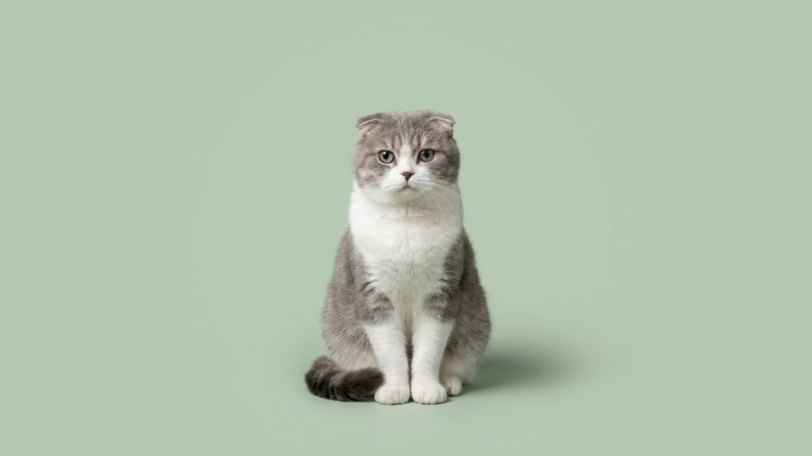

Хайленд-фолд выглядит как игрушка: круглая мордочка, загнутые уши, густая длинная шерсть. За этой внешностью — флегматичный, преданный компаньон, который почти не шумит и хорошо живёт в квартире. Но длинношёрстная вислоухая кошка требует больше ухода, чем кажется, и особого подхода при выборе котёнка.
🐾 У вас хайленд-фолд?
AnimaLife соберёт уход под породу: к каким болезням есть склонность, что проверять по возрасту, чем кормить и когда пора к врачу. Бесплатно, прямо в мессенджере.
Собрать план ухода → Собрать в MAX →
У вас iPhone? AnimaLife есть в App Store
Хайленд-фолд — одна из самых спокойных пород. Он не требует постоянного внимания, не шумит и хорошо переносит одиночество в течение рабочего дня. При этом искренне привязывается к хозяину: ложится рядом, следит взглядом, ждёт у двери. В отличие от восточных пород, не вокализирует без дела — это удобно для тех, кто работает дома.
Густая двойная шерсть хайленд-фолда — главный уходовой момент. Без регулярного вычёсывания она сваливается в колтуны, особенно за ушами, в паху и подмышках. Вычёсывайте кошку 3–4 раза в неделю щёткой с частыми зубьями или расчёской. В период сезонной линьки — ежедневно. Купание — по мере необходимости, 1 раз в 1–2 месяца. Для распутывания готовых колтунов удобна расчёска с вращающимися зубьями — она меньше рвёт шерсть и не причиняет боли кошке.
Загнутое ухо — фирменная черта хайленд-фолда и одновременно зона риска: в плотно прилегающей раковине хуже циркулирует воздух. Осматривайте уши раз в неделю: они должны быть чистыми, без тёмного налёта и неприятного запаха. Периодичность и способ ухода за ушами обсудите с ветеринаром — это зависит от конкретной кошки и степени загиба раковины.
Хайленд-фолд склонен к набору веса при малоподвижном образе жизни. Избыточная масса тела усиливает нагрузку на суставы — у этой породы это особенно важно отслеживать. Разделите суточную норму на 2–3 кормления, избегайте постоянного доступа к еде. Точный рацион и нормы порций подберите вместе с ветеринаром: они зависят от возраста, веса и типа корма.
Ген вислоухости при сведении двух фолдов между собой приводит к нарушениям развития опорно-двигательного аппарата. Добросовестные заводчики вяжут хайленд-фолда только со страйтом (прямоухой разновидностью). Это ключевой вопрос при выборе питомника. Попросите показать родителей котёнка и их ветеринарные документы. Здоровый котёнок активен, с ясными глазами, без выделений из носа и ушей. Минимальный возраст для передачи котёнка — 12 недель: к этому моменту завершается первичный период социализации.
Если хайленд-фолд начинает избегать прыжков или держит лапу в неудобном положении — покажите кошку ветеринару.
Материал носит информационный характер и не заменяет очную консультацию ветеринара.
🐾 Ваш питомец — хайленд-фолд?
Заведите профиль в AnimaLife: приложение запомнит породу, возраст и вес и будет подсказывать по уходу именно для неё. Вопросы AI-ветеринару — круглосуточно и бесплатно.
Завести профиль → Завести в MAX →
У вас iPhone? AnimaLife есть в App Store
🐾 Понравился разбор?
Подпишитесь на канал — каждый день разбираем по одному тревожному симптому у кошек и собак: что в пределах нормы, а когда пора к врачу. Подпишитесь, чтобы не пропустить разбор, который может спасти здоровье вашего питомца.